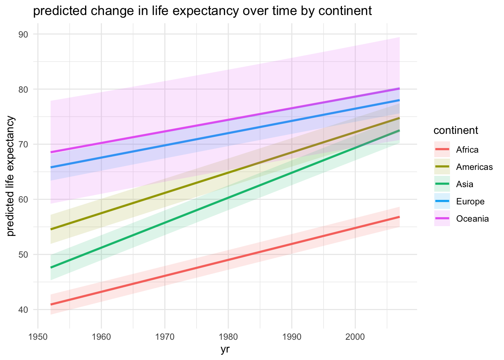

Warning: package 'ggplot2' was built under R version 4.4.3
Warning: package 'lubridate' was built under R version 4.4.3
── Attaching core tidyverse packages ──────────────────────── tidyverse 2.0.0 ──
✔ dplyr 1.1.4 ✔ readr 2.1.5
✔ forcats 1.0.0 ✔ stringr 1.5.1
✔ ggplot2 4.0.1 ✔ tibble 3.2.1
✔ lubridate 1.9.5 ✔ tidyr 1.3.1
✔ purrr 1.0.2
── Conflicts ────────────────────────────────────────── tidyverse_conflicts() ──
✖ dplyr::filter() masks stats::filter()
✖ dplyr::lag() masks stats::lag()
ℹ Use the conflicted package (<http://conflicted.r-lib.org/>) to force all conflicts to become errors
library(lme4)
Warning: package 'lme4' was built under R version 4.4.3
Loading required package: Matrix
Attaching package: 'Matrix'
The following objects are masked from 'package:tidyr':
expand, pack, unpack
library(lmerTest)
Warning: package 'lmerTest' was built under R version 4.4.3
Attaching package: 'lmerTest'
The following object is masked from 'package:lme4':
lmer
The following object is masked from 'package:stats':
step
library(gapminder)library(ggeffects)
Warning: package 'ggeffects' was built under R version 4.4.3
library(MASS)
Attaching package: 'MASS'
The following object is masked from 'package:dplyr':
select
data("gapminder")gap <- gapminder %>%mutate(country =factor(country),continent =factor(continent),year_centered = year -mean(year) )
QUESTION 1 Does life expectancy change over time differently across continents? Hyp: Life expectancy increases over time, but the pattern differs by continent. For this question, I used the gapminder dataset to test whether life expectancy changed over time differently among continents. I used a linear mixed model because life expectancy is a continuous variable, and the dataset includes repeated measurements from the same countries across multiple years. To account for that repeated structure, I included country as a random effect. I also included an interaction between year and continent so I could test whether the slope of change over time differed across continents. The model results show that life expectancy generally increased over time, but the amount of change was not the same for every continent. This supports my hypothesis that trends in life expectancy vary across continents rather than following one single global pattern.
Type III Analysis of Variance Table with Satterthwaite's method
Sum Sq Mean Sq NumDF DenDF F value Pr(>F)
year_centered 13656.4 13656.4 1 1557 1289.661 < 2.2e-16 ***
continent 2853.9 713.5 4 137 67.377 < 2.2e-16 ***
year_centered:continent 3566.1 891.5 4 1557 84.192 < 2.2e-16 ***
---
Signif. codes: 0 '***' 0.001 '**' 0.01 '*' 0.05 '.' 0.1 ' ' 1
pred1 <-ggpredict(mod1, terms =c("year_centered [all]", "continent"))pred1_df <-as.data.frame(pred1)ggplot(pred1_df, aes(x = x +mean(gap$year), y = predicted, color = group, fill = group)) +geom_line(linewidth =1) +geom_ribbon(aes(ymin = conf.low, ymax = conf.high), alpha =0.15, color =NA) +labs(title ="predicted change in life expectancy over time by continent",x ="yr",y ="predicted life expectancy",color ="continent",fill ="continent" ) +theme_minimal()

QUESTION 2 Does population change over time differently across continents? Hyp: Population tends to increase over time, and the rate of increase differs by continent. For this question, I tested to see whether population changed over time differently across continents using the same gapminder dataset as Q1. I chose a negative binomial generalized linear mixed model because population is a non-Gaussian response variable and is very right-skewed, making a standard linear model less appropriate. I again included country as a random effect because each country appears multiple times in the dataset. I also included an interaction between year and continent so I could see whether population trends through time differed among continents. The results tell us that population changes over time are not identical across continents, which means the relationship between year and population depends partly on region.
Warning in checkConv(attr(opt, "derivs"), opt$par, ctrl = control$checkConv, :
unable to evaluate scaled gradient
Warning in checkConv(attr(opt, "derivs"), opt$par, ctrl = control$checkConv, : Model failed to converge: degenerate Hessian with 1 negative eigenvalues
See ?lme4::convergence and ?lme4::troubleshooting.
Warning in checkConv(attr(opt, "derivs"), opt$par, ctrl = control$checkConv, : Model failed to converge with max|grad| = 0.00306073 (tol = 0.002, component 1)
See ?lme4::convergence and ?lme4::troubleshooting.
Warning in checkConv(attr(opt, "derivs"), opt$par, ctrl = control$checkConv, : Model is nearly unidentifiable: very large eigenvalue
- Rescale variables?;Model is nearly unidentifiable: large eigenvalue ratio
- Rescale variables?
Warning in optTheta(g1, interval = interval, tol = tol, verbose = verbose, : Model failed to converge with max|grad| = 0.00541727 (tol = 0.002, component 1)
See ?lme4::convergence and ?lme4::troubleshooting.
Warning in optTheta(g1, interval = interval, tol = tol, verbose = verbose, : Model is nearly unidentifiable: very large eigenvalue
- Rescale variables?;Model is nearly unidentifiable: large eigenvalue ratio
- Rescale variables?
summary(mod2)
Generalized linear mixed model fit by maximum likelihood (Laplace
Approximation) [glmerMod]
Family: Negative Binomial(67.7207) ( log )
Formula: pop ~ year_centered * continent + (1 | country)
Data: gap
AIC BIC logLik -2*log(L) df.resid
52477.8 52543.1 -26226.9 52453.8 1692
Scaled residuals:
Min 1Q Median 3Q Max
-5.6529 -0.4621 0.0501 0.4754 4.8100
Random effects:
Groups Name Variance Std.Dev.
country (Intercept) 2.168 1.472
Number of obs: 1704, groups: country, 142
Fixed effects:
Estimate Std. Error z value Pr(>|z|)
(Intercept) 15.1780348 0.0139849 1085.319 < 2e-16 ***
year_centered 0.0251471 0.0002818 89.229 < 2e-16 ***
continentAmericas 0.7195049 0.1399838 5.140 2.75e-07 ***
continentAsia 1.2804643 0.0140574 91.089 < 2e-16 ***
continentEurope 0.7728122 0.0829702 9.314 < 2e-16 ***
continentOceania 0.5165105 0.8821447 0.586 0.5582
year_centered:continentAmericas -0.0051829 0.0005010 -10.344 < 2e-16 ***
year_centered:continentAsia -0.0009131 0.0004569 -1.998 0.0457 *
year_centered:continentEurope -0.0189071 0.0004696 -40.259 < 2e-16 ***
year_centered:continentOceania -0.0113798 0.0014865 -7.656 1.93e-14 ***
---
Signif. codes: 0 '***' 0.001 '**' 0.01 '*' 0.05 '.' 0.1 ' ' 1
Correlation of Fixed Effects:
(Intr) yr_cnt cntnntAm cntnntAs cntnnE cntnnO
year_centrd 0.000
cntnntAmrcs -0.094 0.000
continentAs -0.295 0.000 0.029
continntErp -0.089 0.000 0.009 0.026
continntOcn -0.078 0.001 0.013 0.023 0.007
yr_cntrd:cntnntAm 0.000 -0.562 0.008 0.000 0.000 -0.001
yr_cntrd:cntnntAs 0.000 -0.617 0.000 0.000 0.000 -0.001
yr_cntrd:cE 0.000 -0.600 0.000 0.000 0.000 -0.001
yr_cntrd:cO 0.000 -0.190 0.000 0.000 0.000 -0.003
yr_cntrd:cntnntAm yr_cntrd:cntnntAs yr_c:E
year_centrd
cntnntAmrcs
continentAs
continntErp
continntOcn
yr_cntrd:cntnntAm
yr_cntrd:cntnntAs 0.347
yr_cntrd:cE 0.338 0.370
yr_cntrd:cO 0.107 0.117 0.114
optimizer (Nelder_Mead) convergence code: 0 (OK)
Model failed to converge with max|grad| = 0.00541727 (tol = 0.002, component 1)
See ?lme4::convergence and ?lme4::troubleshooting.
Model is nearly unidentifiable: very large eigenvalue
- Rescale variables?
Model is nearly unidentifiable: large eigenvalue ratio
- Rescale variables?
Warning in checkConv(attr(opt, "derivs"), opt$par, ctrl = control$checkConv, :
unable to evaluate scaled gradient
Warning in checkConv(attr(opt, "derivs"), opt$par, ctrl = control$checkConv, : Model failed to converge: degenerate Hessian with 1 negative eigenvalues
See ?lme4::convergence and ?lme4::troubleshooting.
Warning in checkConv(attr(opt, "derivs"), opt$par, ctrl = control$checkConv, :
unable to evaluate scaled gradient
Warning in checkConv(attr(opt, "derivs"), opt$par, ctrl = control$checkConv, : Model failed to converge: degenerate Hessian with 1 negative eigenvalues
See ?lme4::convergence and ?lme4::troubleshooting.
Warning in optTheta(g1, interval = interval, tol = tol, verbose = verbose, :
unable to evaluate scaled gradient
Warning in optTheta(g1, interval = interval, tol = tol, verbose = verbose, : Model failed to converge: degenerate Hessian with 2 negative eigenvalues
See ?lme4::convergence and ?lme4::troubleshooting.
You are calculating adjusted predictions on the population-level (i.e.
`type = "fixed"`) for a *generalized* linear mixed model.
This may produce biased estimates due to Jensen's inequality. Consider
setting `bias_correction = TRUE` to correct for this bias.
See also the documentation of the `bias_correction` argument.
pred2_df <-as.data.frame(pred2)ggplot(pred2_df, aes(x = x +mean(gap$year), y = predicted, color = group, fill = group)) +geom_line(linewidth =1) +geom_ribbon(aes(ymin = conf.low, ymax = conf.high), alpha =0.15, color =NA) +labs(title ="predicted population change over time by continent",x ="yr",y ="predicted population",color ="continent",fill ="continent" ) +theme_minimal()